8. 템플릿 (template)/마이그레이션 (migrate)#
템플릿(Template) 기능은 미리 설정된 가상 머신(VM)이나 컨테이너(CT)를 ‘원본 이미지’로 고정하여, 동일한 환경을 신속하게 대량으로 배포하기 위한 핵심 도구입니다.

8.1 업로드#
파일 업로드는 관리자의 로컬 PC에 이미 저장되어 있는 템플릿 파일(
.tar.gz,.tar.xz등) 이나 가상머신 이미지(.iso)를 선택하여 해당 서버의 스토리지로 전송합니다.
8.1.1 컨테이너 템플릿(LXC)/가상머신 이미지(ISO)#

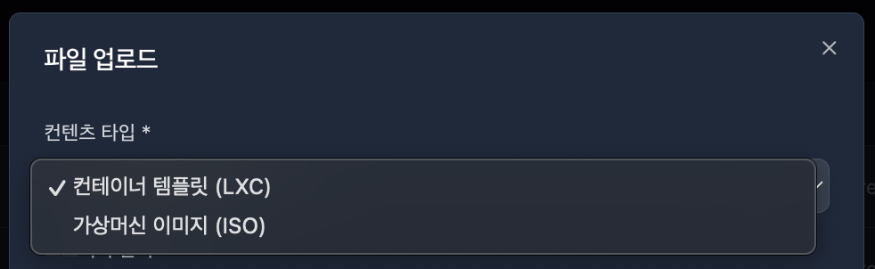
컨텐츠 타입 선택 후 파일 선택 버튼 클릭 시 사용자의 로컬 PC의 파일 목록을 불러옵니다.
업로드 할 파일 목록을 선택하면 파일명과 크기가 자동으로 할당 됩니다.
해시 알고리즘의 기본값은 None 입니다.
알고리즘 종류별 특징
알고리즘 |
보안 강도 |
특징 및 권장 사항 |
|---|---|---|
None |
없음 |
검증을 하지 않습니다. 전송 오류나 변조를 잡을 수 없어 위험합니다. |
MD5 |
매우 낮음 |
과거에 많이 쓰였으나 현재는 보안 취약점 때문에 권장하지 않습니다. 속도는 가장 빠릅니다. |
SHA-1 |
낮음 |
MD5보다는 낫지만 역시 보안상의 이유로 현대적인 시스템에서는 점차 퇴출되는 추세입니다. |
SHA-224 |
보통 (권장) |
국가용 보안요구사항에서 인정하는 최소 보안 강도(112bit 이상)의 시작점입니다2222.+2 |
SHA-256 |
높음 (표준) |
현재 업계 표준으로 가장 널리 사용됩니다. 보안성과 성능의 균형이 가장 좋습니다33.+1 |
SHA-512 |
매우 높음 |
보안 강도가 가장 높지만 계산량이 많아 파일 용량이 클 경우 시간이 더 소요될 수 있습니다44.+1 |
8.2 다운로드(Template)#

프록스목스에서 공식적으로 제공하는 **이미지 목록(Ubuntu, Debian, CentOS 등)**을 서버에서 직접 불러와 선택하여 다운로드합니다.
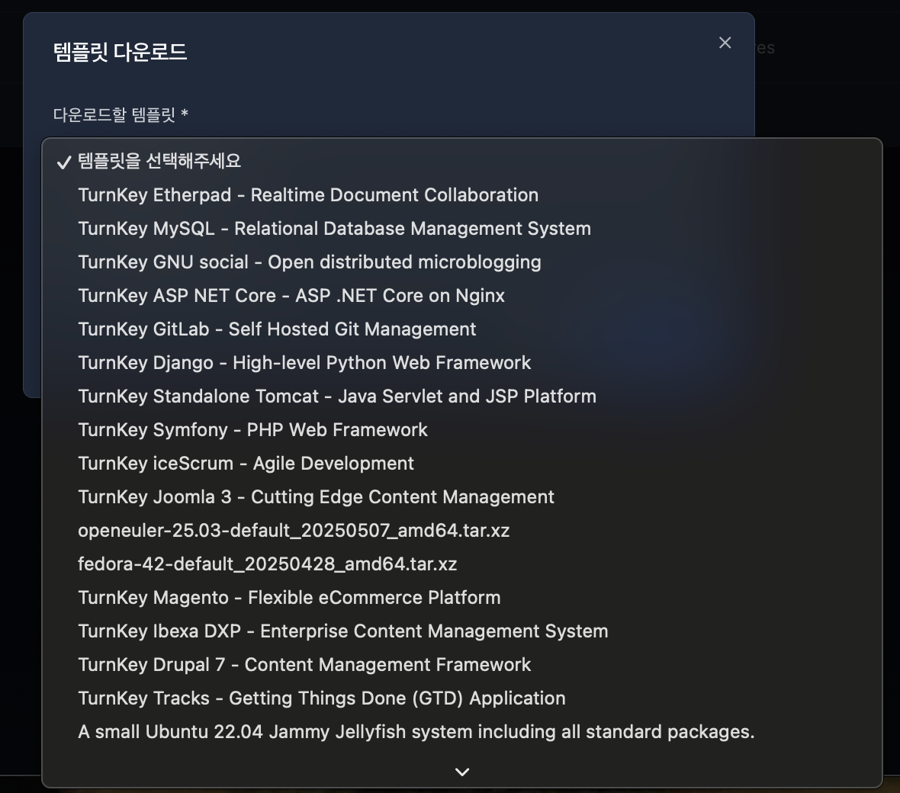
다운로드할 템플릿 목록을 선택합니다.
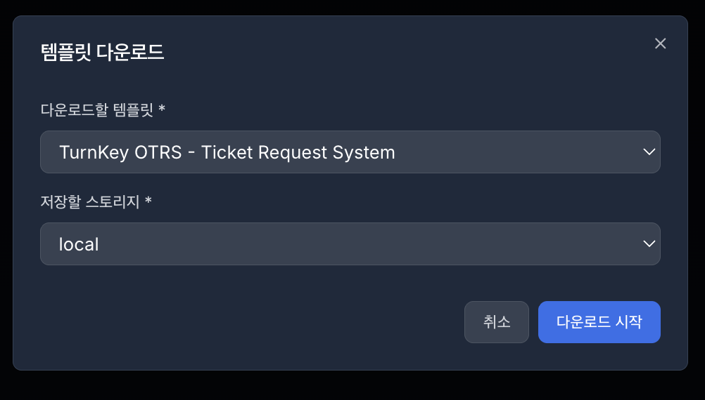

저장할 스토리지 선택 후 다운로드 시작 버튼 클릭 시 다운로드 시작 알림이 표시됩니다.
8.3 템플릿 목록#

템플릿 목록은 가상머신 이나 컨테이너를 템플릿으로 변환한 목록들을 불러옵니다.
이 템플릿들은 복제(Clone), 마이그레이션, 삭제할 수 있습니다.
8.3.1 복제(Clone)#
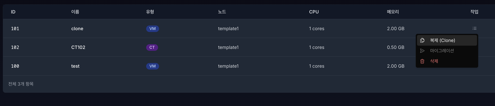
해당 템플릿의 우측 작업 메뉴에서 복제 버튼을 클릭합니다.
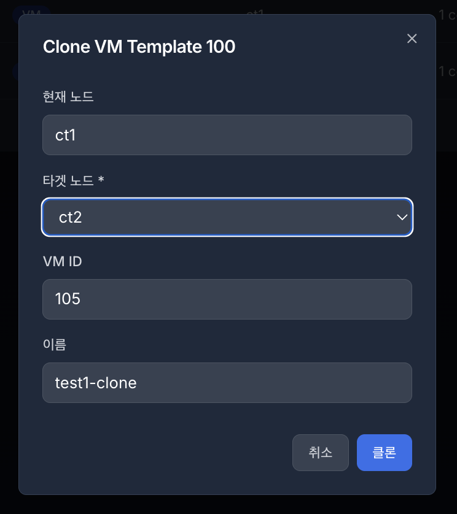
버튼 클릭 후 클론 설정 모달창이 표시됩니다.
타겟 노드: 구성되어있는 클러스터 내의 노드에서 클론이 가능합니다. VM ID: 자동으로 다음 ID가 할당되며, 설정 가능합니다. 이름: 클론할 이름을 입력할 수 있으며, 한글은 입력이 제한됩니다.
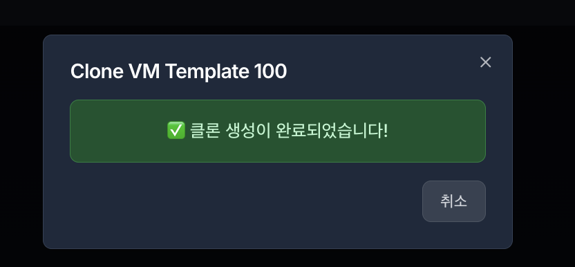
설정 입력 후 클론 버튼을 클릭하면 알림창과 함께 인스턴스 목록에 생성됩니다.
8.4 템플릿으로 변환(Convert to template)#

템플릿 변환은 가상머신 또는 컨테이너를 템플릿으로 변환하는 기능이며, 인스턴스 목록에서 가능합니다.
8.4.1 템플릿 변환 예시#
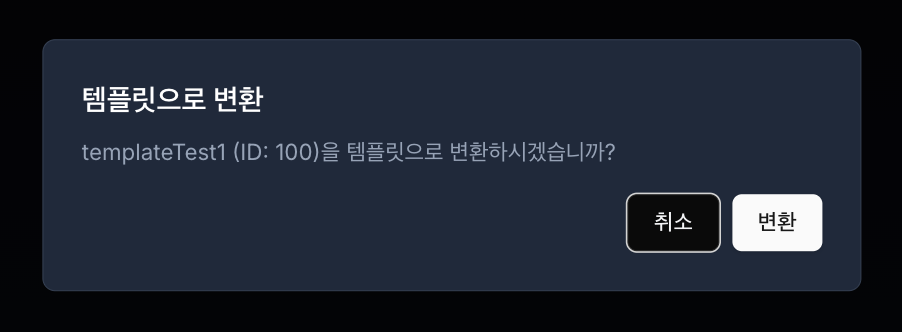
템플릿으로 변환할 VM/CT 선택 후 변환합니다.


템플릿 변환 성공 확인 후 템플릿 에서 변환된 템플릿을 확인합니다.
8.5 마이그레이션(Migrate)#
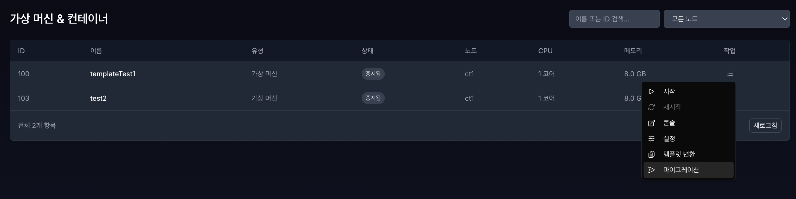

마이그레이션은 인스턴스 목록과 템플릿에서 가능하며, 구성되어 있는 클러스터 노드 내에서 가상머신/컨테이너 또는 템플릿을 이전하는 기능입니다.
⚠️참고: 마이그레이션(버튼)은 클러스터가 구성되어 있지 않으면 활성화가 안됩니다.
8.5.1 가상머신/컨테이너 마이그레이션#
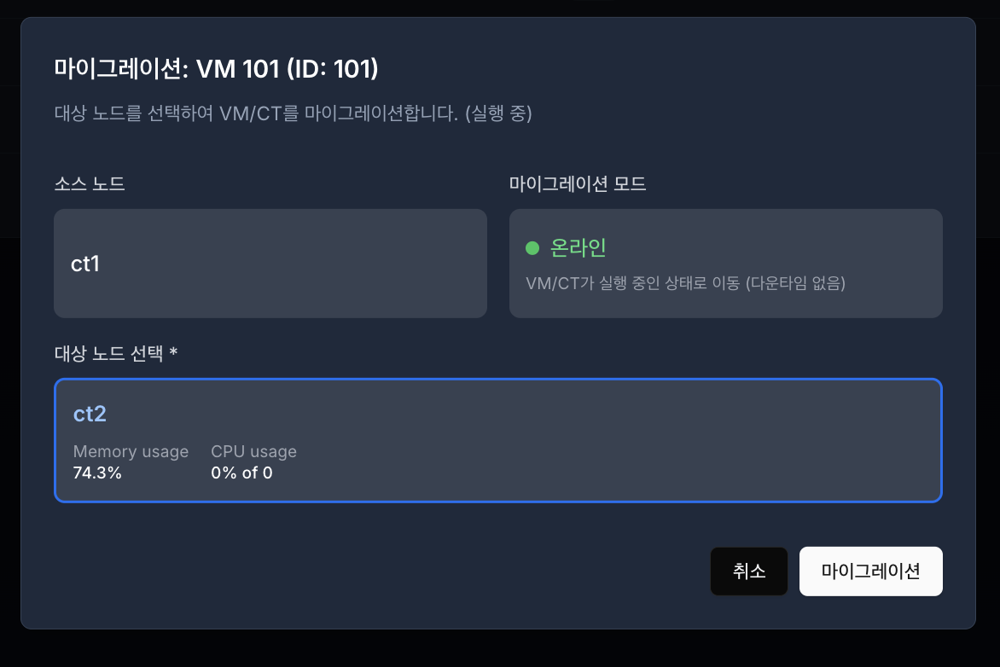
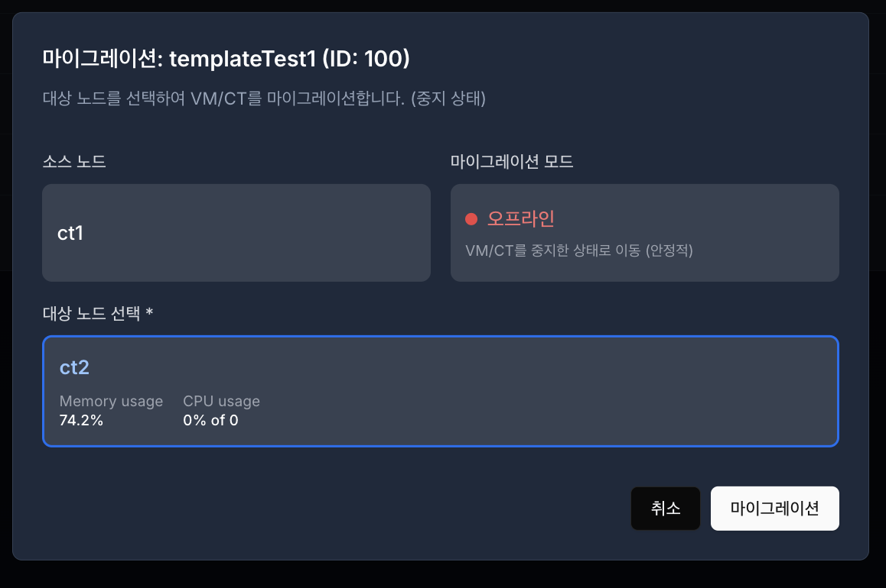
VM/CT 마이그레이션 모드에는 2가지 있습니다. 1. 온라인 마이그레이션: VM/CT 가 실행중일 때 마이그레이션 진행 2. 오프라인 마이그레이션: VM/CT가 중지되어 있을 때 마이그레이션 진행
구분 |
온라인 (Live) 마이그레이션 |
오프라인 (Cold) 마이그레이션 |
|---|---|---|
상태 |
VM이 켜진 채로 이동 |
VM을 끄고 이동 |
다운타임 |
없음 (사용자는 모름) |
있음 (이동하는 시간 동안 접속 불가) |
전송 데이터 |
메모리(RAM) 상태 + 디스크 변경분 |
디스크 데이터 전체 + 설정 파일 |
주요 용도 |
서비스 중단 없이 서버 점검할 때 |
안정적인 이동, 템플릿 이동, 오류 해결 시 |
8.5.2 가상머신/컨테이너 마이그레이션 진행 예시#

마이그레이션을 진행할 VM/CT 선택 후 대상 노드를 선택합니다.
노드1 → 노드2

마이그레이션 버튼 클릭 시 해당 VM/CT 마이그레이션중 문구가 표시됩니다.

잠시 후 마이그레이션이 정상적으로 완료됐는지 확인합니다.
8.5.3 템플릿 마이그레이션#

템플릿 마이그레이션은 오프라인 고정으로 진행됩니다.
8.5.4 템플릿 마이그레이션 진행 예시#
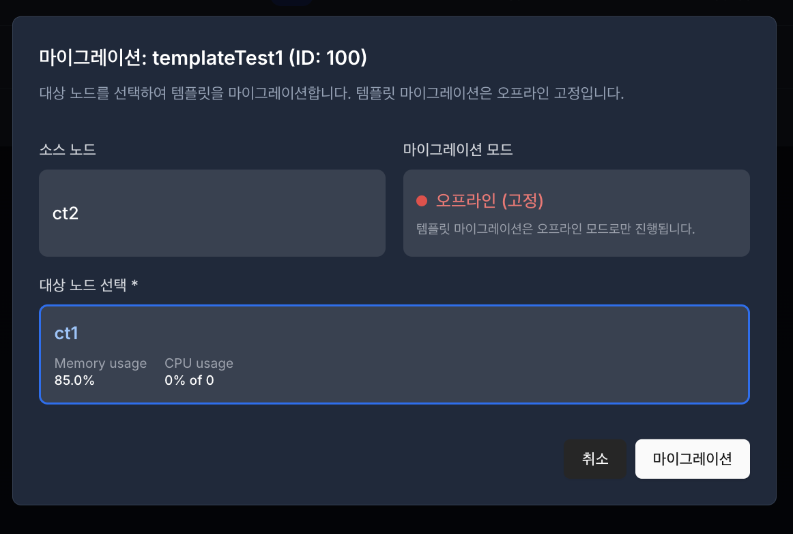
마이그레이션할 템플릿을 선택 후 대상 노드를 선택합니다.
노드2 → 노드1

마이그레이션 버튼 클릭 시 해당 템플릿에 마이그레이션중 문구가 표시됩니다.

잠시 후 마이그레이션이 정상적으로 완료되었는지 확인합니다.